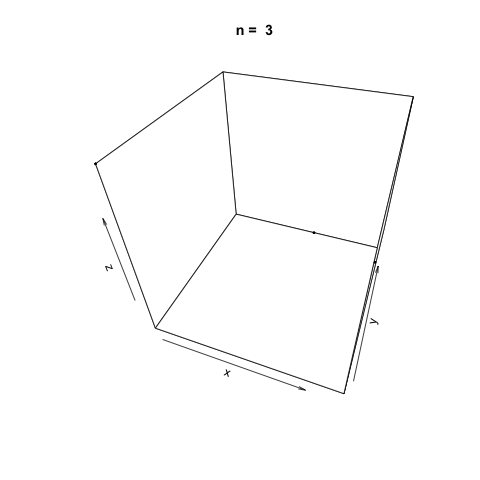
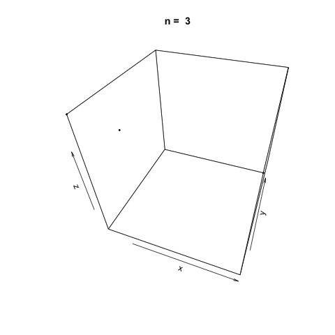

Linear congruential generators (LCGs) are a class of pseudorandom number generator (PRNG) algorithms used for generating sequences of random-like numbers. The generation of random numbers plays a large role in many applications ranging from cryptography to Monte Carlo methods. Linear congruential generators are one of the oldest and most well-known methods for generating random numbers primarily due to their comparative ease of implementation and speed and their need for little memory. Other methods such as the Mersenne Twister are much more common in practical use today.
Linear congruential generators are defined by a recurrence relation:
There are many choices for the parameters \(m\), the modulus, \(a\), the multiplier, and \(c\) the increment. Wikipedia has a seemingly comprehensive list of the parameters currently in use in common programs.
Aside: 'Pseudorandom' and Selecting a Seed Number
Random number generators such as LCGs are known as 'pseudorandom' as they require a seed number to generate the random sequence. Due to this requirement, random number generators today are not truly 'random.' The theory and optimal selection of a seed number are beyond the scope of this post; however, a common choice suitable for our application is to take the current system time in microseconds.
A Linear Congruential Generator Implementation in R
The parameters we will use for our implementation of the linear congruential generator are the same as the ANSI C implementation (Saucier, 2000.).
The following function is an implementation of a linear congruential generator with the given parameters above.
lcg.rand <- function(n=10) {
rng <- vector(length = n)
m <- 2 ** 32
a <- 1103515245
c <- 12345
# Set the seed using the current system time in microseconds
d <- as.numeric(Sys.time()) * 1000
for (i in 1:n) {
d <- (a * d + c) %% m
rng[i] <- d / m
}
return(rng)
}
We can use the function to generate random numbers \(U(0, 1)\).
# Print 10 random numbers on the half-open interval [0, 1)
lcg.rand()
## [1] 0.37640381 0.05926800 0.04859354 0.80578491 0.38819063 0.96884811
## [7] 0.64161718 0.38872898 0.46478403 0.48452079
We can also demonstrate how apparently 'random' the LCG is by plotting a sample generation in 3 dimensions. To do this, we generate three random vectors \(x\), \(y\), \(z\) using our LCG above and plot. The plot3d package is used to create the scatterplot, and the animation package is used to animate each scatterplot as the length of the random vectors, \(n\), increases.
library(plot3D)
library(animation)
n <- c(3, 10, 20, 100, 500, 1000, 2000, 5000, 10000, 20000)
saveGIF({
for (i in 1:length(n)) {
x <- lcg.rand(n[i])
y <- lcg.rand(n[i])
z <- lcg.rand(n[i])
scatter3D(x, y, z, colvar = NULL, pch=20, cex = 0.5, theta=20, main = paste('n = ', n[i]))
}
}, movie.name = 'lcg.gif')
As \(n\) increases, the LCG appears to be 'random' enough as demonstrated by the cloud of points.

Linear Congruential Generators with Poor Parameters
The values chosen for the parameters \(m\), \(a\) and \(c\) are very important in driving how 'random' the generated values from the linear congruential estimator; hence that is why there are so many different parameters in use today as there has not yet been a clear consensus on the 'best' parameters to use.
We can demonstrate how choosing poor parameters for our LCG leads to not so random generated values by creating a new LCG function.
lcg.poor <- function(n=10) {
rng <- vector(length = n)
# Parameters taken from https://www.mimuw.edu.pl/~apalczew/CFP_lecture3.pdf
m <- 2048
a <- 1229
c <- 1
d <- as.numeric(Sys.time()) * 1000
for (i in 1:n) {
d <- (a * d + c) %% m
rng[i] <- d / m
}
return(rng)
}
Generating successively longer vectors using the 'poor' LCG and plotting as we did previously, we see the generated points are very sequentially correlated, and there doesn't appear to be any 'randomness' at all as \(n\) increases.
n <- c(3, 10, 20, 100, 500, 1000, 2000, 5000, 10000, 20000)
saveGIF({
for (i in 1:length(n)) {
x <- lcg.poor(n[i])
y <- lcg.poor(n[i])
z <- lcg.poor(n[i])
scatter3D(x, y, z, colvar = NULL, pch=20, cex=0.5, theta=20, main = paste('n = ', n[i]))
}
}, movie.name = 'lcg_poor.gif')

References
Saucier, R. (2000). Computer Generation of Statistical Distributions (1st ed.). Aberdeen, MD. Army Research Lab.